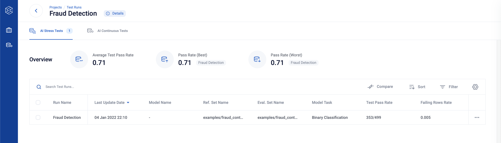
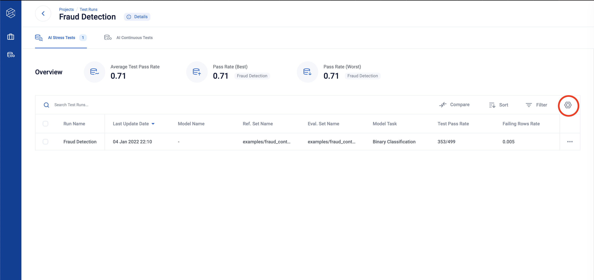
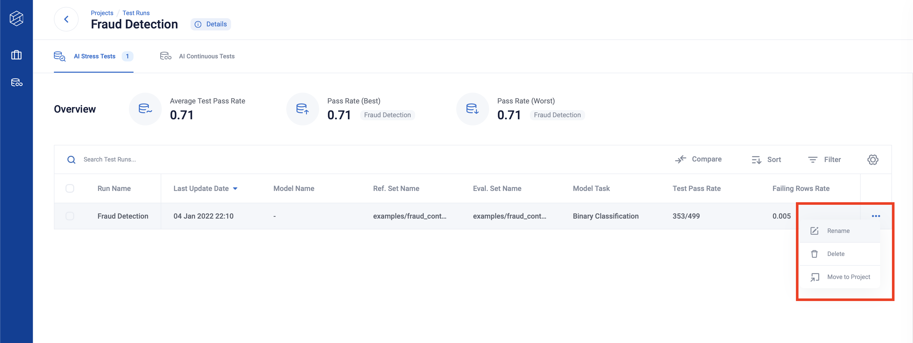
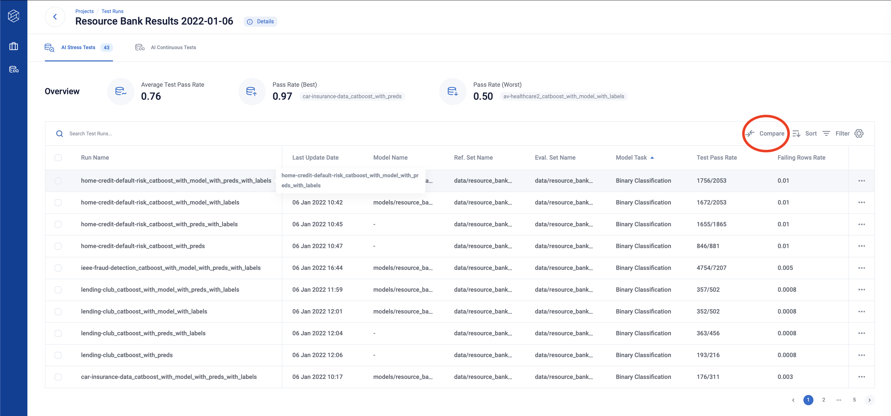
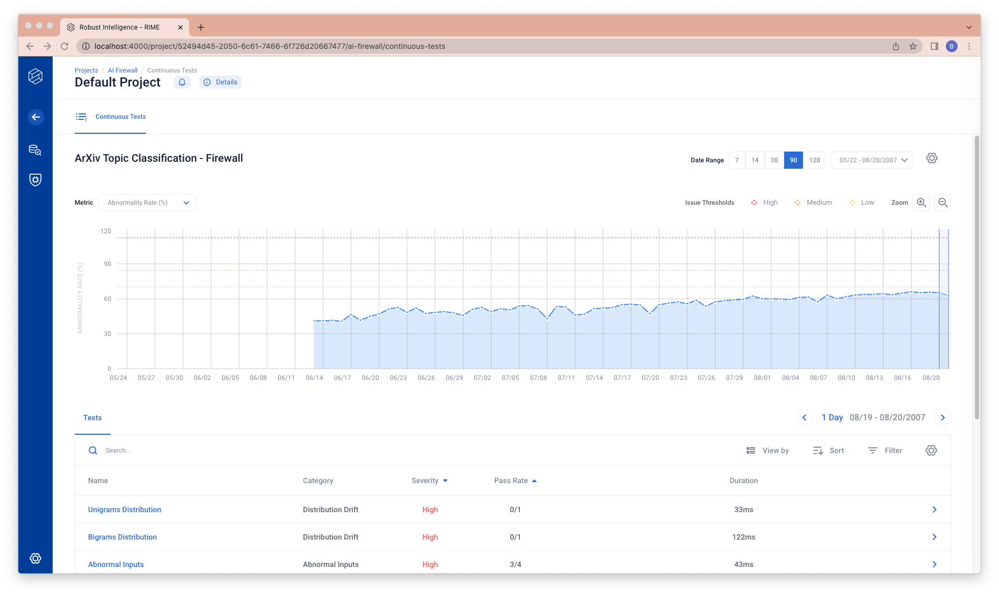

RIME NLP UI
At this point, you should have your first working RIME run. Congratulations! You’re off to a very good start. Assuming you have the RIME backend running locally, you can navigate to the locally deployed projects page and follow along to the guided tour of the RIME UI below.
Projects
This page lists all projects created. Every test run initially belongs to the default project with project id 0. You can create other projects to help organize your various scenarios. Click on the row to see more information about the test runs in the default project.

You can create a new project through the [ + New Project ] button on top left.
Runs
This is an entry point to view different RIME test runs. Here, you can get a quick overview of each run and sort runs by clicking a column header.
You can compare test runs better through the columns manager, which you can toggle on by clicking the setting icon.
On the columns manager, you can toggle, order and pin the columns you are interested in.

You can also select test run(s) to rename, delete or move them to a different project by clicking on the three dots on the right-hand side of the row.
Click any row to see more detailed testing information about your latest run.
Tip: You can use Shift key + select for specifying the first and last item to multiple-select.
Side by Side Comparisons
Clicking on the “Compare” button on the top of the Test Run Table takes you to the Side by Side Comparison page.
You can compare eligible test runs from the project by selecting them from the dropdown.

AI Stress Testing
The Test Runs page is home to all the test results and summary metrics generated by a single run of RIME.
By default, the tests are organized by category. To alternatively sort tests by severity, toggle the view’s By Category button, as shown in the screenshot below. You can also sort and filter the table.
The Test Runs page also enables you to easily share the results of your experiment. Click the Download Report button to export a summary pdf.
You can view the tests by category, and the category tabs include suggestions created from the test results.
Test Detail - Test Cases
Clicking on a test type row will take you to the corresponding test detail page, allowing you to further investigate individual test cases.
If you click the (i) More button, you can read an in-depth context of the test.
Clicking on the “Configuration” tab reveals the configurations used for the test, as well as their descriptions.
Each table row corresponds to a single test case. Click to view the expanded details, which provide info on the test case and an explanation of the test outcome.
Tip: You can use Esc key for returning back to the list of tests/features page.
Test Detail - Resolve
You can manually resolve any test case with a warning status by clicking the red status button on the left side of the row. Click the Mark All As Resolved in the top left-hand corner of the table to resolve all rows with warnings for that test.
For example, before resolving any test case you may see something like this.

After clicking warning to resolve a test case, the test case is marked as resolved.
AI Firewall Continuous Tests
You can more effectively monitor your models over time on this tab. The chart and the table track changes in summary metrics over time and dive into test results at different time intervals to diagnose the underlying causes of issues. For more information on running AI Firewall Continuous Tests, please visit AI Firewall Continuous Tests Walkthrough.
The chart graphs a summary metrics over the range of the continuous test. You can change the summary metrics charted (y value on the chart) through the top left dropdown.
The table below shows the tests of the selected bin (one day or one hour). By clicking on the chart, you can select the range to be the current range.
You can also use the left and right button to select the previous and the next bin.
You can change the date range (x-axis range on the chart) through the top right buttons.
You can see the details of a test by clicking the test table row.
You will be directed to a test level view.